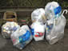

＜６月のクリーン活動＞ 12.06.21
６月２１日に１７名で活動を行いました。収集可能なゴミ以外に不法投棄と思われる自動車があり、市へ調査及び撤去を依頼。
〔収集されたゴミ〕 可燃ゴミ：4袋、ビン・缶：1袋、ペットボトル：1袋 不燃ゴミ：傘、ライター、電子レンジ用皿、他
|
＜５月のクリーン活動＞ 12.05.24
５月２４日に１８名で活動を行いました。収集可能なゴミ以外に不法投棄と思われる自動車、ＯＡチェアー、自転車等があり、市へ調査及び撤去を依頼。
〔収集されたゴミ〕 可燃ゴミ：5袋、ビン・缶：1袋、ペットボトル：1袋 不燃ゴミ：傘、ハンガー、他
|
＜４月のクリーン活動＞ 12.04.26
４月２６日に１７名で活動を行いました。収集可能なゴミ以外に不法投棄と思われる自動車、ＰＣ、バッテリー等があり、市へ調査及び撤去を依頼。
〔収集されたゴミ〕 可燃ゴミ：3袋、ビン・缶：1袋、ペットボトル：1袋 不燃ゴミ：傘、食器、他
|
＜３月のクリーン活動＞ 12.03.29
３月２９日に１６名で活動を行いました。収集可能なゴミ以外に不法投棄と思われる自動車、マットレス等があり、市へ調査及び撤去を依頼。
〔収集されたゴミ〕 可燃ゴミ：4袋、ビン・缶：1袋、ペットボトル：1袋 不燃ゴミ：スプレー缶、自転車ブレーキワイヤー、他
|
＜２月のクリーン活動＞ 12.03.01
３月１日に１５名で活動を行いました。収集可能なゴミ以外に不法投棄と思われる自動車、布団、及びマットレス等があり、市へ調査及び撤去を依頼。
〔収集されたゴミ〕 可燃ゴミ：5袋、ビン・缶：1袋、ペットボトル：1袋 不燃ゴミ：傘、空気清浄機、蛍光灯、他
|
＜１月のクリーン活動＞ 12.01.26
 １月２６日に１５名で活動を行いました。収集可能なゴミ以外に不法投棄と思われる自動車等があり、市へ調査及び撤去を依頼。 １月２６日に１５名で活動を行いました。収集可能なゴミ以外に不法投棄と思われる自動車等があり、市へ調査及び撤去を依頼。
〔収集されたゴミ〕 可燃ゴミ：5袋、ビン・缶：1袋、ペットボトル：1袋 不燃ゴミ：自動車用ライト、蛍光灯、釣竿、他
|
＜１２月のクリーン活動＞ 11.12.22
１２月２２日に１７名で活動を行いました。収集可能なゴミ以外に不法投棄と思われる自動車、ＴＶ等があり、市へ調査及び撤去を依頼。
〔収集されたゴミ〕 可燃ゴミ：5袋、ビン・缶：1袋、ペットボトル：1袋 不燃ゴミ：2輪車用ロック、スプレー缶、他
|
＜１１月のクリーン活動＞ 11.11.24
 １１月２４日に１７名で活動を行いました。収集可能なゴミ以外に不法投棄と思われる自動車、ダンボール箱に入ったゴミ等があり、市へ調査及び撤去を依頼。 １１月２４日に１７名で活動を行いました。収集可能なゴミ以外に不法投棄と思われる自動車、ダンボール箱に入ったゴミ等があり、市へ調査及び撤去を依頼。
〔収集されたゴミ〕 可燃ゴミ：5袋、ビン・缶：1袋、ペットボトル：1袋 不燃ゴミ：傘、ボール(鍋)、他
|
＜１０月のクリーン活動＞ 11.10.20
１０月２０日に１８名で活動を行いました。収集可能なゴミ以外に不法投棄と思われる自動車、ＴＶ等があり、市へ調査及び撤去を依頼。
〔収集されたゴミ〕 可燃ゴミ：4袋、ビン・缶：3/4袋、ペットボトル：1袋 不燃ゴミ：傘、鍋、他
|
＜９月のクリーン活動＞ 11.09.22
 ９月２２日に１７名で活動を行いました。収集可能なゴミ以外に不法投棄と思われるソファー等があり、市へ調査及び撤去を依頼。 ９月２２日に１７名で活動を行いました。収集可能なゴミ以外に不法投棄と思われるソファー等があり、市へ調査及び撤去を依頼。
〔収集されたゴミ〕 可燃ゴミ：４袋、ビン・缶：１袋、ペットボトル：１袋 不燃ゴミ：ビニール傘、ライター、他
|
＜８月のクリーン活動＞ 11.08.18
８月１８日に１８名で活動を行いました。収集可能なゴミ以外に不法投棄と思われる自動車等があり、市へ調査及び撤去を依頼。
〔収集されたゴミ〕 可燃ゴミ：４袋、ビン・缶：１袋、ペットボトル：１袋 不燃ゴミ：カゴ、玩具のタイヤ、他
|
＜７月のクリーン活動＞ 11.07.28
７月２８日に１６名で活動を行いました。収集可能なゴミ以外に不法投棄と思われる自動車、ＴＶ、よしず等があり、市へ調査及び撤去を依頼。
〔収集されたゴミ〕 可燃ゴミ：７袋、ビン・缶：１．５袋、ペットボトル：１袋 不燃ゴミ：かさ、小型機器、他
|
＜６月のクリーン活動＞ 11.06.23
６月２３日に１７名で活動を行いました。収集可能なゴミ以外に不法投棄と思われる自動車等があり、市へ調査及び撤去を依頼。
〔収集されたゴミ〕 可燃ゴミ：２袋、ビン・缶：１/２袋、ペットボトル：３/４袋 不燃ゴミ：ボックス、かさ、長靴、他
|
＜５月のクリーン活動＞ 11.05.26
５月２６日に１７名で活動を行いました。収集可能なゴミ以外に不法投棄と思われる自動車・ＴＶ等があり、市へ調査及び撤去を依頼。
〔収集されたゴミ〕 可燃ゴミ：４袋、ビン・缶：３/４袋、ペットボトル：１袋 不燃ゴミ：ポリタンク、蛍光管、他
|
＜４月のクリーン活動＞ 11.04.28
４月２１日雨天延期のため、４月２８日に１４名で活動を行いました。収集可能なゴミ以外に、不法投棄と思われる自動車、合板等があり、市へ調査及び撤去を依頼。
〔収集されたゴミ〕 可燃ゴミ：３．５袋、ビン・缶：３/４袋、ペットボトル：１袋 不燃ゴミ：ビニール傘、他
|
＜周辺地域の環境パトロール＞
11.04.12
４月１２日に周辺地域の環境(不法投棄等)の監視のため、パトロールを行いました。結果として、タイヤ、木製の柵、及び不法投棄と思われる自動車を確認し、市へ調査及び撤去を依頼。
|
＜２月のクリーン活動＞ 11.03.03
２月２４日雨天延期のため、３月３日に１５名で活動を行いました。収集可能なゴミ以外に、不法投棄と思われる自動車等があり、市へ調査及び撤去を依頼。
〔収集されたゴミ〕 可燃ゴミ：５袋、ビン・缶：１/２袋、ペットボトル：３/４袋 不燃ゴミ：ライト、他
|
＜１月のクリーン活動＞ 11.01.27
１月２７日に１６名で活動を行いました。収集可能なゴミ以外に不法投棄と思われる自動車・自転車・カーテン等があり、市へ調査及び撤去を依頼。
〔収集されたゴミ〕 可燃ゴミ：５袋、ビン・缶：３/４袋、ペットボトル：３/４袋 不燃ゴミ：傘、電池、ライター、他
|
＜１２月のクリーン活動＞ 10.12.23
１２月２３日に１３名で活動を行いました。収集可能なゴミ以外に不法投棄と思われる自動車・自転車・ガスコンロ等があり、市へ調査及び撤去を依頼。
〔収集されたゴミ〕 可燃ゴミ：６袋、ビン・缶：３/４袋、ペットボトル：１/２袋 不燃ゴミ：金網、フレーム、他
|
＜１１月のクリーン活動＞ 10.11.17
１１月のクリーン活動は習志野市主催の『秋のごみゼロ運動』に参加し、１６名で活動を実施。
〔収集されたゴミ〕 可燃ゴミ：３袋、ビン・缶：３/４袋、ペットボトル：１/２袋 不燃ゴミ：傘
|
＜１０月のクリーン活動＞ 10.11.10
１０月のクリーン活動が雨天延期となり、１１月１０日へ日程を変更し、１４名で活動を行いました。収集可能なゴミ以外に不法投棄と思われる自動車、自転車・家電・寝具等があり、市へ調査及び撤去を依頼。
〔収集されたゴミ〕 可燃ゴミ：６袋、ビン・缶：３/４袋、ペットボトル：１/２袋 不燃ゴミ：メガネ
|
＜９月のクリーン活動＞ 10.09.29
９月２９日に１６名で活動を行いました。収集可能なゴミ以外に不法投棄と思われる自動車、自転車・家電等があり、市へ調査及び撤去を依頼。
〔収集されたゴミ〕 可燃ゴミ：３袋、ビン・缶：１袋、ペットボトル：１/２袋 不燃ゴミ：座椅子、金具 等
|
＜８月のクリーン活動＞ 10.08.03/17/31
８月は３日、１７日、３１日に周辺地域の環境(不法投棄等)の監視のため、パトロールを行いました。
結果として、ポリ容器、家具、及び不法投棄と思われる自動車を確認し、市へ調査及び撤去を依頼。
|
＜７月のクリーン活動＞ 10.07.22
７月２２日に１８名で活動を行いました。収集可能なゴミ以外に不法投棄と思われる自動車、自転車・布団等があり、市へ調査及び撤去を依頼。
〔収集されたゴミ〕 可燃ゴミ：４袋、ビン・缶：１袋、ペットボトル：２/３袋 不燃ゴミ：傘、ハンガー 等
|
＜６月のクリーン活動＞ 10.06.17
６月は習志野市主催の『春のごみゼロ運動』に参加し、１６名でクリーン活動を行いました。また、３月に習志野市へ調査、及び撤去依頼を行った不法投棄と思われる自動車が撤去されました。
〔収集されたゴミ〕 可燃ゴミ：４袋、ビン・缶：２/３袋、ペットボトル：２/３袋 不燃ゴミ：針金、金網、他
|
＜５月のクリーン活動＞ 10.05.27
５月２７日に１６名で活動を行いました。活動エリアの駐車場内に不審物があり、習志野市開発公社様と協力し、調査及び撤去を行いました。
〔収集されたゴミ〕 可燃ゴミ：４.５袋、ビン・缶：１袋、ペットボトル：３/４袋、不燃ゴミ：乾電池、自動車部品等
|
＜４月のクリーン活動＞ 10.05.06
５月６日に１７名で活動を行いました。収集可能なゴミ以外に不法投棄と思われる自転車・自動車があり、市へ調査を依頼。
〔収集されたゴミ〕 可燃ゴミ：３袋、ビン・缶：１.５袋、ペットボトル：３/４袋、不燃ゴミ：自転車用ライト等
|
＜３月のクリーン活動＞ 10.03.30
３月３０日に１７名でクリーン活動を行いました。また、大型ゴミの長期放置による周辺の“ゴミ捨て場化”を防止するため、習志野市へ当日発見された不法投棄と思われる自動車の調査依頼を行いました。
〔収集されたゴミ〕 可燃ゴミ：８袋、ビン・缶：１袋、ペットボトル：１袋、不燃ゴミ：ハンドル、電池、他
|
＜２月のクリーン活動＞ 10.02.25
２月２５日に１７名でクリーン活動を行いました。また、１月に習志野市へ調査及び撤去依頼を行った不法投棄と思われる自動車及び自転車が撤去されました。
〔収集されたゴミ〕 可燃ゴミ：２袋、ビン・缶：１袋、ペットボトル：３/４袋、不燃ゴミ：乾電池、スキー板、テーブル、他
|
＜１月のクリーン活動＞ 10.01.28
１月２８日に１４名でクリーン活動を行いました。また、大型ゴミの長期放置による周辺の“ゴミ捨て場化”を防止するため、習志野市へ当日発見された不法投棄と思われる自動車・自転車の調査及び撤去依頼を行いました。
〔収集されたゴミ〕 可燃：4袋、缶・ビン：1袋、ペットボトル：3/4袋、不燃ごみ：傘、その他：軽自動車・自転車
|
＜１２月のクリーン活動＞ 09.12.24
１２月２４日に１４名でクリーン活動を行いました。また、９月から実施している『ポイ捨て禁止の路面シート』の掲示による『マナー向上』の働きかけの改善効果の確認を行いました。
〔収集されたゴミ〕可燃ゴミ：３袋、ビン・缶：３/４袋、ペットボトル：１/４袋、不燃ゴミ：乾電池、他
|
＜１１月のクリーン活動＞ 09.11.19
１１月のクリーン活動は習志野市主催の 『秋のごみゼロ運動』 に参加し、１３名で活動を実施。
〔収集されたゴミ〕
可燃ゴミ：５袋、ビン・缶：１袋、ペットボトル：１袋、不燃ゴミ：電池、テレビ等
|
＜１０月のクリーン活動＞ 09.10.22
 １０月２２日に１９名でクリーン活動を行いました。今月は、９月に実施した『ポイ捨て禁止の路面シート』の掲示後の改善効果の確認を行いました。 １０月２２日に１９名でクリーン活動を行いました。今月は、９月に実施した『ポイ捨て禁止の路面シート』の掲示後の改善効果の確認を行いました。
〔収集されたゴミ〕
可燃ゴミ：３袋、ビン・缶：３/４袋、ペットボトル：１袋、不燃ゴミ：扇風機、タイヤ、傘、他
|
＜９月のクリーン活動＞ 09.09.24
９月２４日に１９名でクリーン活動を行いました。また、今月は改善活動として習志野市クリーン推進課の協力のもと、ゴミのポイ捨ての多い地域へ『ポイ捨て禁止の路面シート』の貼り付けを行いました。
〔収集されたゴミ〕
可燃ゴミ：３.５袋、ビン・缶：１袋、ペットボトル：１袋、不燃ゴミ：蛍光灯、電池、他
|
＜８月のクリーン活動＞ 09.08.27
８月２７日に１７名で活動を行いました。地域環境の良化を進めるため、先月から引き続き、ゴミが多く捨てられている地域の調査を行いました。
〔収集されたゴミ〕
可燃ゴミ：２袋、ビン・缶：１袋、ペットボトル：１袋、不燃ゴミ：安全靴、ライター、鏡
|
＜７月のクリーン活動＞ 09.07.17
７月１７日に１６名で活動を行いました。地域環境の良化を進めるため、特にゴミが多く捨てられている地域の調査を行いました。
〔収集されたゴミ〕
可燃ゴミ：４袋、ビン・缶：１袋、ペットボトル：１袋、不燃ゴミ：少量
|
＜６月のクリーン活動＞ 09.06.17
６月１７日に習志野市主催の『春のごみゼロ運動』に参加し、１８名で活動を行いました。
〔収集されたゴミ〕
可燃ゴミ：８袋、 ビン・缶：１袋、 ペットボトル：１袋、 不燃ゴミ：少量（電池・金具等）、 ダンボール：少量
|
＜５月のクリーン活動＞ 09.05.22
５月２２日に１５名で活動を行いました。収集可能なゴミ以外に不法投棄と思われる自転車・自動車があり、市へ調査を依頼。
〔収集されたゴミ〕
可燃ゴミ：５袋、 ビン・缶：２袋、 ペットボトル：２袋、 不燃ゴミ：電気ポット・ライター等
|